Hey, thanks for stopping by!
I’m Jonatan, a Brighton-based audio engineer, producer, and sound designer.
Whether you’re an artist, producer, recording studio, indie studio, or games company, I’d love to work with you! I specialize in engineering, the technical aspects of music production as well as full pipeline video game audio.
I’m always on the lookout for new and exciting projects. Feel free to reach out and say hello!
RECENT PROJECTS
Aphantasia
VIDEO GAME DEMO
This is an original, audio-only game concept, made as part of my bachelor's dissertation. Gameplay was constructed in Unity and audio was implemented through FMOD.
Voice-over performed by Karis Taylor.
VIDEO GAME REDESIGNS
Gameplay clips with completely re-designed audio. All included audio is new and redesigned by me.
CINEMATIC REDESIGNS
Various cinematics with completely re-designed audio. All included audio is new and redesigned by me.
Sound Design
Designing audio assets for interactive audio is a very involved process that can be done in several different ways. I use everything from synthesis to Foley performance and field recording to achieve the aesthetic vision required for any project. Be it stylised 8-bit synth patches or precise recordings, I have the tools and contacts needed for any design challenge.
Implementation
With so many tools, engines and languages available to us, audio implementation can often be a confusing process. I’m very confident in using most game engines on the market with any audio middleware in order to design systems and implement audio assets. I have a strong grasp of blueprints and MetaSounds, as well as a basic grasp of C# and C++, allowing me to work with programmers to design bespoke solutions for your project.
Field Recording
In order to make your game stand out, using library assets is usually not good enough. I have been gathering personal recordings for years, and I’m always happy to go out and create and manage a custom library for your project.
I have a deep-rooted passion for video game audio stemming from a lifelong obsession with games and an extensive background in technical audio.
My expertise covers the full game audio pipeline from recording, design, and composition to implementation, editing, and mixing. Working from my personal studio, I have all the tools necessary to record, design, and implement any type of audio in any engine.
Video game audio is an ever-evolving art form. I firmly believe that a broad fundamental grasp of as many tools, methodologies, and aspects of video game design as possible is the key to true creative freedom. I am very passionate about video game audio and game production in general. Regardless of your budget and audio needs, I’d love to know more about your game!
 Mixing
Designing audio assets for interactive audio is a very involved process that can be done in several different ways. I use everything from synthesis to Foley performance and field recording to achieve the aesthetic vision required for any project. Be it stylised 8-bit synth patches or precise recordings, I have the tools and contacts needed for any design challenge.
Mastering
With so many tools, engines and languages available to us, audio implementation can often be a confusing process. I’m very confident in using most game engines on the market with any audio middleware in order to design systems and implement audio assets. I have a strong grasp of blueprints and MetaSounds, as well as a basic grasp of C# and C++, allowing me to work with programmers to design bespoke solutions for your project.
Production
In order to make your game stand out, using library assets is usually not good enough. I have been gathering personal recordings for years, and I’m always happy to go out and create and manage a custom library for your project.
Recording
In order to make your game stand out, using library assets is usually not good enough. I have been gathering personal recordings for years, and I’m always happy to go out and create and manage a custom library for your project.
Coming from a musical background, I’ve run the gambit when it comes to audio engineering. I’ve worked extensively as a live sound engineer, recording engineer, producer, mixing engineer and mastering engineer.
Working out of my personal studio in Brighton with a wide network of studios, producers, engineers, and artists, I have all the tools needed to facilitate any stage of music production. My goal is to support bands, artists, and producers and demystify the technical aspects of music production.
I strongly believe that relationships and collaboration are at the heart of any artistic endeavour. As such, I strive to build a welcoming, inclusive, and safe environment where art can flourish.
I will tailor my services and prices to your project. Please get in touch, especially if you’re funding your own project, and we can find a solution that works best for you.